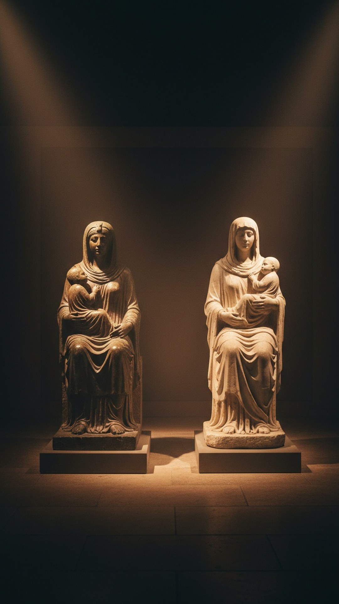

You have probably seen the list. Horus: born December 25 of the virgin Isis, star in the east, three kings, twelve disciples, walked on water, crucified, dead three days, resurrected. It is the most shared meme in this entire genre, it went global with the film Zeitgeist in 2007, and almost every line of it is fabricated.
This is part 10 of THE BLUEPRINT, and it is the autopsy. We promised at the start of this series that when a parallel is fake we would kill it in public, because the real pattern does not need the fake one. So first the kill list, with sources. Then the part nobody tells you: what the actual Egyptian texts say about Horus, which is stranger than the meme, and carved a thousand years before Moses.

Where the list came from
Not from Egyptology. The Horus-Jesus list traces to two Victorian amateurs: Gerald Massey, an English poet with no training in the field, and Kersey Graves, whose 1875 book on sixteen crucified saviors invented sources wholesale. A century later Zeitgeist repackaged their claims for the internet. Around 2004 the scholar W. Ward Gasque emailed twenty leading Egyptologists to ask about these parallels. The ones who replied dismissed them, one calling the whole tradition fringe nonsense. Massey does not appear in the Oxford Encyclopedia of Ancient Egypt at all.
The kill list
December 25: no Egyptian text. The closest anyone gets is Plutarch, a Greek writing around 100 AD, who says Isis bore the infant Harpocrates near the winter solstice, and in the same passage says his festival was celebrated after the spring equinox. Virgin birth: the Pyramid Texts describe exactly how Horus was conceived, and it is explicitly sexual: Isis conceives him from the body of the murdered Osiris. She is a widow, not a virgin, and the name Isis-Meri appears in no text: Massey built it from an Egyptian word for beloved to make her sound like Mary. Star in the east, three kings, twelve disciples, walking on water, a sermon on a mount: no source, none, for any of them. Crucified and dead for three days: Horus does not even die in the main myth. He loses an eye fighting Set and gets it back. And the claim that Horus was called KRST rests on the Egyptian word krst, which means burial. It is written on coffins because that is what coffins are for.
Not one line of the viral Horus list appears in a single Egyptian text. What the texts actually say is older and stranger than the meme.
What the Egyptians actually wrote
Now the real material. Around 2400 BC, the Pyramid Texts record the conception of Horus: Isis gathers the pieces of her murdered husband and conceives a son from a dead god. Not a virgin birth, but a fully miraculous conception, in the oldest religious writing on earth. The Coffin Texts, around 2000 BC, add the part that should sound familiar: the usurper Set, who murdered the rightful king, hunts the infant heir to kill him. Isis flees with her baby and hides him in the papyrus marshes of Chemmis in the Nile Delta until he is strong enough to claim his kingdom. A divine child, a murderous rival on the throne, a mother hiding her son in the wilderness of Egypt. Matthew's infancy story runs on the same engine, and the Egyptian version had been scripture for two thousand years when Matthew wrote that Jesus was hidden, of all places, in Egypt.
And there is a death after all, just not the one the meme claims. In the healing tradition, the child Horus is stung by a scorpion in the marshes and dies. Isis screams, the boat of the sun stops in the sky, and the god Thoth descends to revive the dead child. That story is carved on the Metternich Stela, cut around 360 to 343 BC, three and a half centuries before Christianity. Egyptians poured water over the carved words and drank it to be healed by the story of the divine child who came back. The stone is real, it is pre-Christian, and it sits today in the Metropolitan Museum of Art in New York.
The mother and child the world already knew
One more piece, and it is visual. From roughly 700 BC onward, Egypt mass-produced statuettes of Isis seated with the infant Horus on her lap, nursing him. Thousands survive. The cult of Isis spread across the whole Roman Empire carrying that image with it, and her temple at Philae stayed open until the emperor Justinian closed it around 535 AD, deep into the Christian era. Art historians have debated for a century how much the seated Madonna and Child owes to the pose every Mediterranean convert already knew from Isis. Direct borrowing is unproven. The visual continuity is hard to unsee. And beneath it all sits Egypt's oldest idea: every pharaoh was Horus incarnate, a god in a human body ruling on earth. The god-man was Egyptian state doctrine for three thousand years.
The honest difference
The Metternich revival is healing magic, not a salvation narrative: Horus is revived so the spell works on scorpion stings, not to redeem mankind. The conception is miraculous but not virginal. The iconography argument is about art, not theology. Strip the meme away and Horus is not a copy of Jesus, and Jesus is not a copy of Horus. What the sources support is narrower and more interesting: the hunted divine child, the miraculous conception, the mother-and-child image, and the incarnate god-king, all resident in Egypt for millennia, next door to Judea, before the Gospels were written.
The fake list survives because it is easy to share and hard to check. Check it anyway: every claim we killed above dies from a primary source, and everything we kept stands on one. That is the only way this investigation stays honest.
A child hidden in Egypt from a king who wanted him dead, in texts two thousand years before Matthew, and a dead divine child revived on a stone you can visit in New York. If the fabrications are worthless, why does what remains still rhyme? Follow THE BLUEPRINT as the investigation continues.
This is Part 10 of 23 in THE BLUEPRINT, an investigation into the pre-Christian figures who carried the pieces of the Jesus story. See every part of the series here.
Before you go
7 books the Vatican doesn't want you reading. Free PDF — the texts they cut, with sources. Joined by 140+ Inner Circle members.
No spam. Unsubscribe anytime.
Go deeper
The Hidden Canon, Vol. I — Enoch. Jubilees. Thomas. Mary. Judas. 90 pages, 14 chapters, every receipt cited. The books your Bible quietly removed.
Read the Canon →Books that informed this investigation
As an Amazon Associate, Hidden Epoch earns from qualifying purchases. Cost to you: nothing.
Research safely
The VPN we use to research without being tracked. First 3 months free.
Get NordVPN →